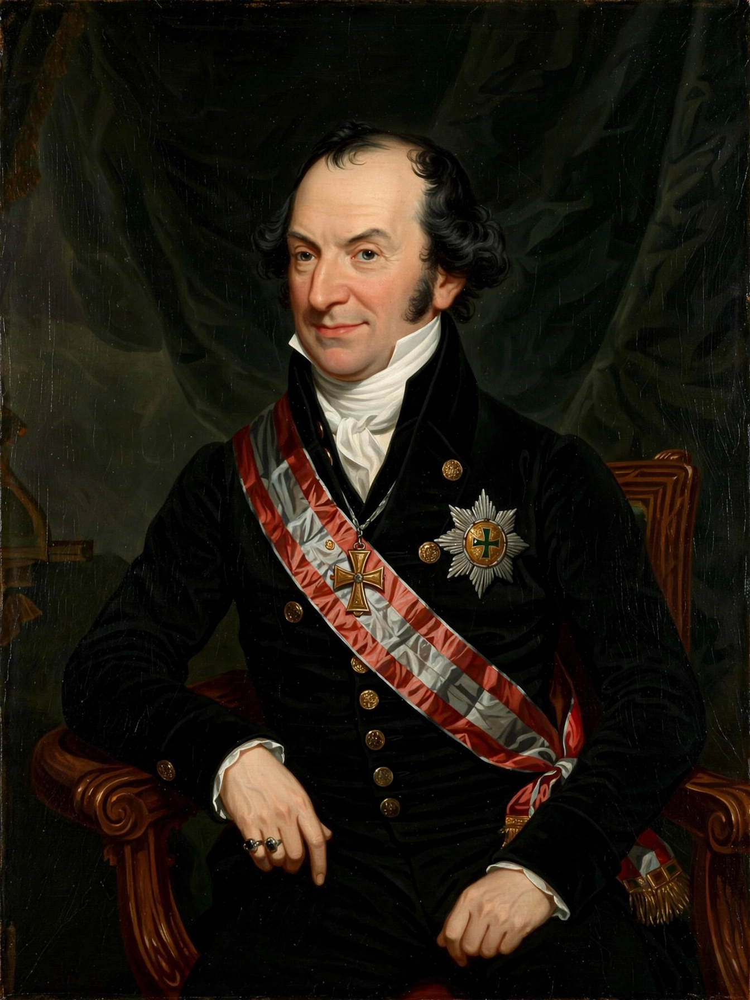

Klemens von Metternich
| Klemens von Metternich | |
|---|---|
| Born | 15 May 1773, Koblenz |
| Died | 11 June 1859 (aged 86), Vienna |
| Roles | Austrian foreign minister (1809–1848), State Chancellor (1821–1848) |
| Known for | Congress of Vienna (1814–15); the conservative "Metternich system" |
Klemens Wenzel Lothar von Metternich (1773–1859) was an Austrian diplomat and statesman who dominated European politics for three decades after the Napoleonic Wars. As foreign minister from 1809 and State Chancellor from 1821, he directed Austrian policy through the final coalitions against Napoleon and presided over the Congress of Vienna (1814–15), which redrew the map of Europe after 23 years of war.

The Vienna system
Metternich's settlement rested on the balance of power, legitimacy of dynasties, and compensation of territory: France was contained but not crushed (thanks also to Talleyrand's diplomacy); Austria traded the distant Austrian Netherlands for Lombardy-Venetia; Prussia gained the Rhineland; and Russia took most of Poland. To police the settlement, Metternich built the alliance system of the Concert of Europe and, within the German Confederation, repressive instruments like the Carlsbad Decrees (1819) against liberal and national movements — the "Metternich system". He regarded nationalism and liberalism as existential threats to the multinational Austrian Empire, and for a generation his system kept any general European war at bay.
Fall and reputation
The revolutions of 1848 swept him away in a night: he resigned on 13 March 1848 and fled Vienna (hidden, legend says, in a laundry basket) for exile in London and Brussels, returning late in life as an elder statesman without office. Historians argue over him still: a farsighted architect of a century without world war, or a reactionary coachman (his own image: he held the reins of a Europe galloping toward the abyss) who merely postponed, and sharpened, the forces that destroyed his world in 1914.